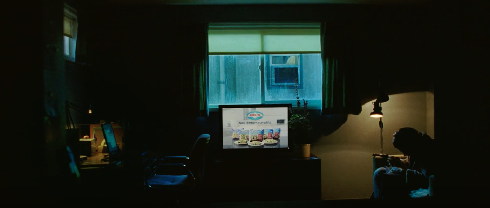
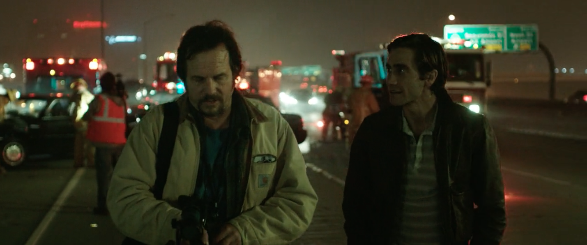
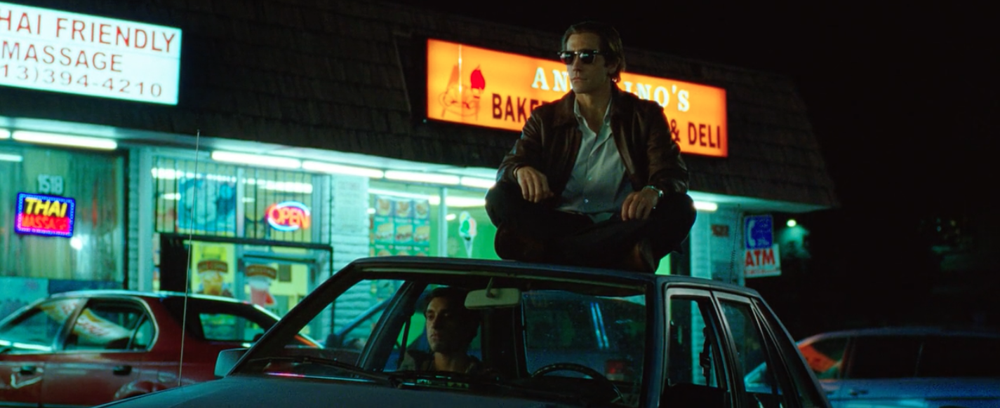
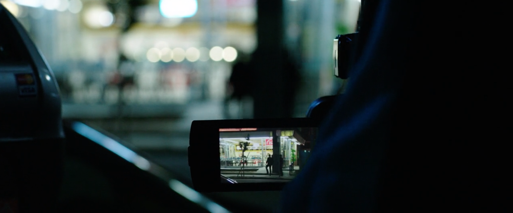
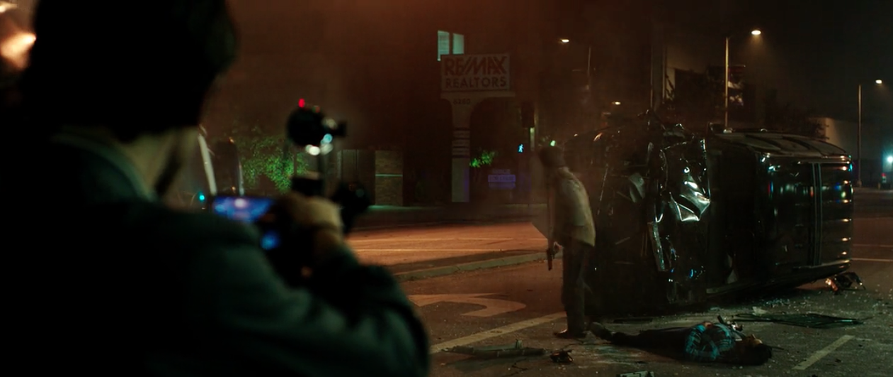

Louis Bloom følger nyhederne morgenen efter at have overværet et voldsomt biluheld
Ved førnævnte biluheld mødte Lou en freelance kameramand der fortæller ham om jobbet og princippet i "If it bleeds, it leads"
Efter at have arbejdet for sig selv i et stykke tid for Lou sig en ubetalt praktikant, Rick. Her er Ricks første arbejdsdag
Lou har fandt et aktivt indbrud i et dyrt kvarter hvor han så ansigterne på nogle af de voldelige gerningsmænd. Efter at genkende dem i en restaurant giver han politiet et anonymt tip og venter på konfrontationen.
Førnævnte konfrontation ender i en skudepisode og en biljagt, som Lou og Rick følger på meget nært hold.
